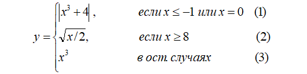

<!DOCTYPE html>
<html lang="en">
  <head>
    <meta charset="UTF-8" />
    <meta name="viewport" content="width=device-width, initial-scale=1.0" />
    <title> Кобельчук А.И.</title>
   <style>
   .style1 {
       margin-left: 38%; 
       margin-right: 38%;      
       display: block;   
       padding: 0.8%;
       line-height: 60%;   
   }      
  </style>
  </head>
  <body>
    <script>
      "use strict"; 
      let y;
        let x = prompt("введите значение x:");
        let numMethod;
        if (x<=-1 || x==0){
            y=Math.abs(Math.pow(x,3)+4);
            numMethod = 1;
        } else if(x>=8){
            y = Math.sqrt(x/2);
            numMethod = 2;
        } else{
            y= Math.pow(x,3);
            numMethod = 3;
        }
        document.write('<div class="style1">'); 
        document.write('<p>');
        document.write("Значение функции y: " + y + "<p>");
        document.write("Значение функции вычеслено по формуле " + numMethod + "<p>");  
        document.write("Информация о разработчике скрипта:<p>");
        document.write('<p>');  
    </script>
  </body>
</html>